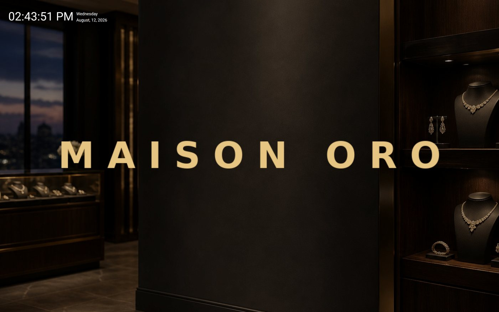
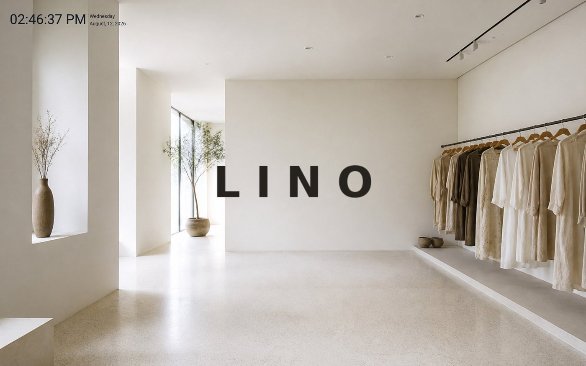
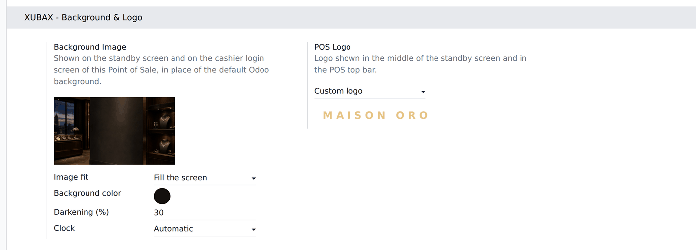

Between one sale and the next, an Odoo register sits on its standby screen showing the same generic artwork and the Odoo logo. That screen faces your shop floor all day. This module puts your picture and your brand there instead, chosen separately for every Point of Sale.
The standby screen, where the register waits between sales, and the cashier login screen. Same Odoo, same buttons — dressed by you.

Odoo writes the clock in dark grey, which vanishes the moment you put a dark photograph behind it. This module reads how dark your background ends up — picture, colour and darkening together — and switches the clock to white when it has to. Two shops, two backgrounds, nothing to configure:
|
Dark photograph → white clock |
 Bright photograph → dark clock |
Settings ▸ Point of Sale ▸ (your register) ▸ XUBAX - Background & Logo. Nothing to install on the terminals: open the Point of Sale and it is there.

| Background image | Replaces the default Odoo artwork on the standby screen and on the cashier login screen. |
| Background colour | Painted behind the image. On its own it turns the screen into a flat brand colour, with no image at all. |
| Image fit | Fill the screen, fit the whole image, tile or centre — so a wide photo, a tall poster and a small pattern all land properly on any screen shape. |
| Darkening | A veil of black from 0 to 80 % over the picture, so the clock and the buttons hold up over bright or busy photographs. |
| Clock | Automatic by default; force it dark or light whenever you disagree. |
| POS logo | Keep the Odoo logo, use your company logo in one click, or upload a custom one. It replaces the Odoo logo in the middle of the standby screen and in the POS top bar. |
No core file is overwritten. Odoo already draws those screens through CSS variables that the Point of Sale leaves empty; this module simply fills them in, per register. No core stylesheet is replaced and no core template is patched, so a Point of Sale with nothing configured looks exactly like a plain Odoo.
Your POS opens just as fast as before. Odoo reads every field of the register when a session starts, so an image stored there would travel base64-encoded to every terminal on every load. This module keeps both images out of that payload and sends short URLs instead: each browser downloads the picture once and then serves it from its own cache. The address only changes when the picture itself changes — saving any other setting does not force a re-download.
No new route, no public endpoint. The images are
served by Odoo's own /web/image, which applies the reader's access
rights unchanged.
point_of_sale
only.XUBAX · www.xubax.com · Support: soporte@xubax.com